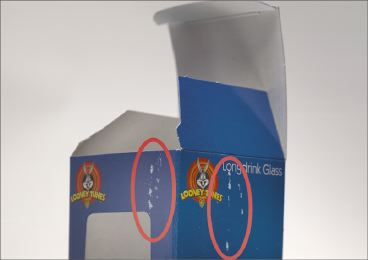
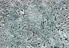
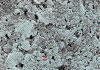
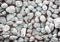
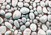
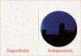
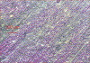

SCHEUERN DER DRUCKFARBE
|
Beim Scheuern der Druckfarbe handelt es sich um
Farbabrieb einer bedruckten Oberfläche nach
mehrmaligen Belastungssituationen (Abb. 1 und Abb.
2). Die Folge von Scheuerschäden reicht von
der Verkaufsminderung bis zur
Unverkäuflichkeit der Drucke.
|

|
Abb. 1: Farbabrieb an einer Verkaufspackung.
|
|
|
|
Mögliche Ursachen:
|
|
|
|
Abb. 2: Vergrößerte Darstellung des
Farbabriebs an einer Verkaufspackung.
|
|
|
|

|
|
Abb. 3: 5000-fache Vergrößerung der
Oberfläche eines glänzend gestrichenen
Papiers (REM-Aufnahme)
|
|
|
|

|
|
Abb. 4: 5000-fache Vergrößerung der
Oberfläche eines mattgestrichenen Papiers
(REM-Aufnahme).
|
|
|
|

|
|
Abb. 5: REM-Aufnahme von Puder auf
Calciumcarbonat-Basis.
|
|
|
|

|
|
Abb. 6: REM-Aufnahme von Puder auf
Stärke-Basis.
|
|
|
|
|
|
Abb. 7: Scheuerschäden am
Auflagendruck.
|
|
|
|

|
|
Abb. 8: Visuelle Beurteilung mittels Scheuertest
am Auflagendruck.
|
|
|
|

|
|
Abb. 9: REM-Aufnahme von Scheuerschäden am
Auflagendruck.
|
|
|
|
|
Bedruckstoff (zutreffend für Bogenoffset und
Rollenoffset):
Das Scheuern ist ein Problem, das insbesondere beim
Bedrucken von mattge-strichenen Papieren in Erscheinung
tritt. Aufgrund der charakteristisch rauen Papierstruktur
von mattgestrichenen Papieren wirkt deren Oberfläche im
Gegensatz zu glänzend gestrichenen Papieren wesentlich
abrasiver (Abb. 3 und Abb. 4). Stehen die bedruckten
Flächen im direkten Kontakt zueinander, kann dabei
unter Druckbelastung und beim auftreten von mehreren
Scheuerbewegungen die Druckfarbe regelrecht abgetragen
werden. Dies ist im Wesentlichen von der
Oberflächencharakteristik und vom eingesetzten
Streichpigment der Mattpapiere abhängig. Vergleicht man
den rein papierbedingten Einfluss, so können sich
mehrere mattgestrichene Papiere wesentlich im
Scheuerverhalten unterscheiden.
Druckfarbe (zutreffend für Bogenoffset und
Rollenoffset):
Auch die Druckfarben haben einen wesentlichen Einfluss auf
das Scheuerverhalten. Dabei spielen Eigenschaften wie die
Verfestigung des Druckfarbenfilms oder die Zugabe von
Wachsen zur Verbesserung der Gleitwirkung eine entscheidende
Rolle. Im direkten Vergleich von mehreren Druckfarbentypen
können sich die einzelnen Farben wesentlich in ihrem
Scheuerverhalten unterscheiden.
Druckbestäubungspuder:
Die Art, Menge und die Korngröße des
Druckbestäubungspuders im Bogenoffset hat ebenfalls
einen wesentlichen Einfluss auf das Scheuern von Drucken.
Speziell Pudersorten mit Calciumcarbonat oder Zucker als
Puderkorn haben eine sehr abrasive Wirkung, da diese
Pudersorten von ihrer Struktur her sehr scharfkantig sind
(Abb. 5).
Trocknung der Druckfarbe:
Siehe Kapitel Trocknungsverzögerungen.
Verpackung der Drucke (zutreffend für Bogenoffset
und Rollenoffset):
Durch eine unzureichende Verpackung können auch Drucke
mit hoher Scheuerfestigkeit zum Scheuern neigen.
Insbesondere beim Transport kommt es zu dauerhaften
Rüttelbelastungen unter Druck, die extreme
Farbabrieberscheinungen hervorrufen können.
|
Mögliche Abhilfen:
|
|
Grundsätzlich ist, um das Scheuern eines Druckes zu
vermeiden, eine optimale Abstimmung der Kombination:
Druckfarbe/Papier dringende Voraussetzung. Dies kann am
besten in einem Druckversuch oder im Labor erfolgen. Auf
diese Art können gut verträgliche Kombinationen
ausgetestet und für zukünftige Aufträge
eingesetzt werden. Der Einsatz einer
„Standarddruckfarbe“ für alle Papiersorten
wäre zwar wünschenswert, Praxisergebnisse beweisen
allerdings immer wieder, dass dies nicht realistisch
ist.
Sofern der Drucker Einfluss auf die Wahl des Papiers hat,
sollten Papiere (insbesondere mattgestrichene Papiere) mit
gutem Scheuerverhalten eingesetzt werden.
Ebenso sollten Druckfarben mit geringer Scheuerwirkung
eingesetzt werden.
Um optimalen Scheuerschutz zu gewährleisten, ist
generell eine Schutzlackierung der Drucke empfehlenswert.
Dabei ist darauf zu achten, dass die Lackschichtdicke
ausreichend hoch ist und dass der Lack auf die Druckfarbe
abgestimmt ist.
Einen weiteren, 100 % -igen Schutz stellt eine
Folienkaschierung, z. B. bei Umschlagmaterialien, dar.
Bei der Wahl des Druckbestäubungspuders sollte der
Pigmentart große Bedeutung beigemessen werden. Aus
einer Vergleichsuntersuchung hat sich gezeigt, dass
Stärke im Gegensatz zu Calciumcarbonat oder Zucker als
Pigment ein wesentlich besseres Scheuerverhalten aufweist,
da dass Pigment von der Struktur her eher rund und wenig
abrasiv ist (Abb. 6).
Weiterhin ist die Korngröße und die Menge des
aufgebrachten Puders entscheidend. Es gilt dabei: so klein
und so wenig wie möglich.
Die Trocknung der Druckfarbe muss abgeschlossen sein. Bei
gestrichenen Papieren ist ein Zeitraum von min. 24 Stunden
und bei ungestrichenen Papieren von min. 48 Stunden bis zur
Weiterverarbeitung bzw. Transport empfehlenswert. Beim
Rollen-offset ist eine korrekte Einstellung des
Heißlufttrockners wichtig.
Grundsätzlich muss beim Verpacken darauf geachtet
werden, dass sich die Drucke nicht gegeneinander bewegen
können. Beim Verpacken in Karton muss evtl.
Ausgleichsmaterial berücksichtigt werden. Beim
Verpacken von hochwertigen Druckerzeugnissen ist es
empfehlenswert Seidenpapier als Zwischenlage zu
verwenden.
|
Beispiel(e):
|
|
Scheuern beim Druck auf glänzend gestrichenem
Papier:
Eine im Bogenoffset gedruckte Auflage konnte wegen starker
Scheuerschäden, die während des Transportes zur
Druckweiterverarbeitung aufgetreten sind, nicht
weiterverarbeitet werden. Eine visuelle Begutachtung vor Ort
bestätigte, dass die Drucke wegen der
Scheuerschäden nicht mehr verkäuflich waren (Abb.
7). Manuelle Scheuertests an den Druckbogen zeigten, dass
die Scheuerfestigkeit für einen Druck auf glänzend
gestrichenem Papier äußerst schlecht war. Bei
Berühren der be-druckten Oberfläche mit dem Finger
fühlte sich die Oberfläche rau an, ebenfalls
untypisch für glänzend gestrichene Papiere.
Im FOGRA-Labor konnte die schlechte
Scheuerbeständigkeit der Drucke durch einen Scheuertest
mit 10 Scheuerbewegungen bestätigt werden. Die
Bestimmung der Scheuerfestigkeit erfolgte mit dem
prüfbau-Scheuertestgerät „Quartant“. Die
zu prüfende Probe wird dabei auf einen 600 g schweren
Metallzylinder (Durchmesser 50 mm) fixiert. Die
Scheuergegenfläche wird auf einem Probenhalter
befestigt, der unbeweglich im Scheuerprüfgerät
eingespannt wird. Bei der Durchführung des Tests liegt
die Scheuerprobe auf der Scheuergegenfläche auf und
übt somit durch das Eigengewicht des Metallzylinders
einen definierten Druck aus. Der Farbabrieb wird
geprüft, indem die Scheuerprobe in eine horizontale
Hubbewegung und gleichzeitig in eine Rotationsbewegung
versetzt wird. Der Abrieb wird nach Ablauf des Versuches
visuell beurteilt (Abb. 8).
Weiterhin wurde die bedruckte Oberfläche makroskopisch
untersucht. Dabei zeigte sich, dass im Druck mit einer hohen
Pudermenge gearbeitet wurde. Die Korngröße des
Puders war mit 40 µm für diese Art Papier zu
groß. Eine Nachfrage beim Drucker ergab, dass dieser
aus Zeitgründen mit sehr hoher Maschinengeschwindigkeit
gedruckt hat. Weiterhin war die Auflagenhöhe sehr
groß. Um die Anzahl der bedruckten Stapel
möglichst gering zu halten, wurden hohe Stapel erzeugt.
Um unter diesen Voraussetzungen ein Ablegen der Druckfarbe
im Stapel zu vermeiden, hatte der Drucker die Pudermenge
erhöht. Als Puder wurde Calciumcarbonat eingesetzt. In
der Gesamtheit führten diese Umstände (zu hohe
Pudermenge, zu großes Puderkorn, Calciumcarbonat) zu
den beanstandeten Scheuerschäden. Das
Druckbestäubungspuder bildete eine sehr abrasiv
wirkende Zwischenschicht, so dass es durch
Rüttelbewegungen beim Transport zu den
Scheuerschäden kam (Abb. 9).
|
Allgemeine Hinweise:
|
|
Für den Reklamationsfall:
Druckausfallmuster sicherstellen.
Unbedruckte Papier- bzw. Kartonmuster und unbedruckte
Vergleichsmuster sicherstellen (ca. 20 Blatt DIN A4). An
diesen Mustern können im Labor vergleichende
Wegschlagtests, Probedrucke und Scheuertests vorgenommen
werden.
Druckfarbenproben (aus dem Farbkasten) und evtl.
Vergleichsfarben sicherstellen.
Produktionsdaten protokollieren.
Puderprobe entnehmen.
Ergänzende Literatur:
SCHREINER, H.:
Der Einfluss mattgestrichener Papiere auf die mechanische
Widerstandsfestigkeit von Offsetdrucken.
München: FOGRA, 1984 (4.025). - Forschungsbericht
RIEGER, G.:
Der Einfluss mattgestrichener Papiere auf die mechanische
Widerstandsfestigkeit von Offsetdrucken (Teil 2).
München: FOGRA, 1987 (4.025/2). - Forschungsbericht
WEISSENBORN, M.:
Scheuerfestigkeit - wieder anders.
In: Print, Nr. 5, 1992, (S.38)
|
|
|
|
|
|
|
Kontakt:
zins@fogra.org
|
Sch-zin-200111
|